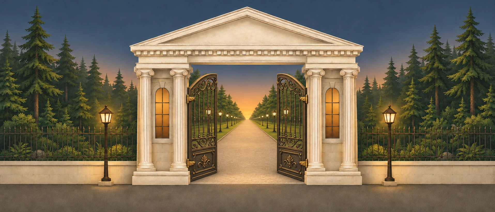
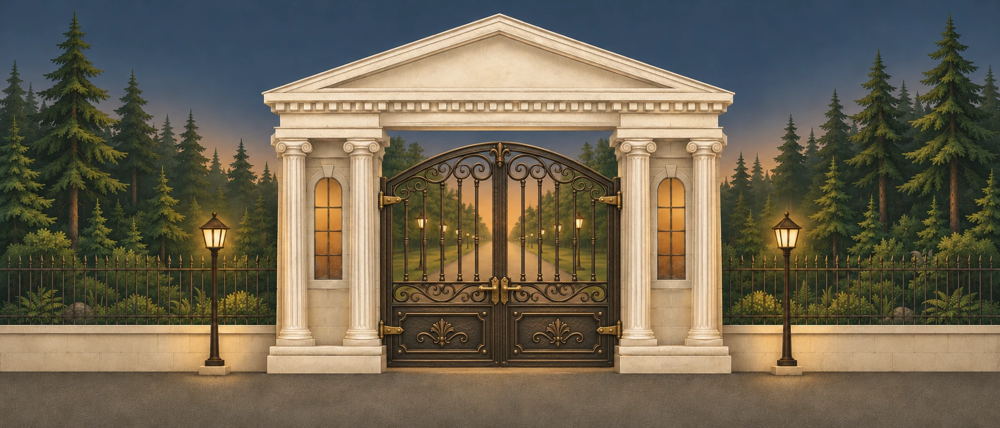
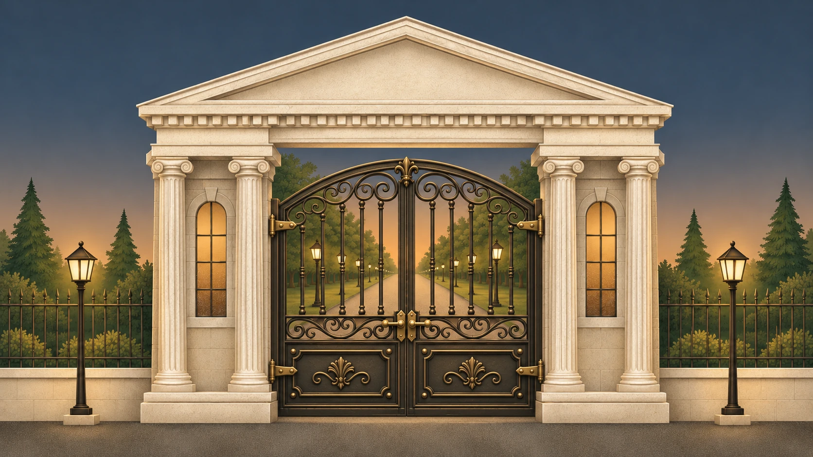
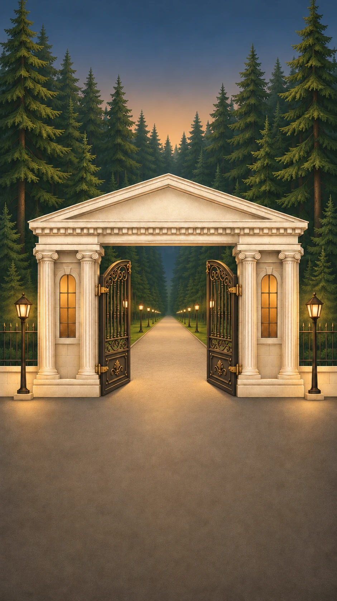
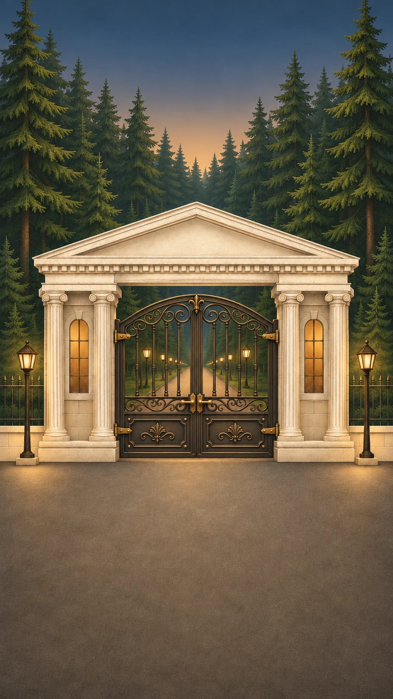

В октябре 1936 года при станции Зеленоградская Северной железной дороги был организован дачно-строительный кооператив «Работники искусств» — для народных и заслуженных артистов и руководителей московских учреждений культуры.
В конце 1920-х — начале 1930-х в Пушкинском районе задумали «Зелёный город» — город-курорт для рабочих, модель быта будущего. Идея принадлежала журналисту Михаилу Кольцову, а под проект создали акционерное общество с огромным по тем временам капиталом в 10 млн рублей.
Под стройку отвели около 15 тысяч гектаров, из них 11 тысяч — охранная лесная зона. Генплан на 130 тысяч жителей предложил архитектор Николай Ладовский, автор южного вестибюля станции метро «Красные Ворота». Успели проложить дороги, частично построить лыжную станцию и возвести в натуральную величину макеты жилых ячеек. Ход работ курировал Михаил Калинин.
В июне 1931 года деньги, людей и стройматериалы перебросили на строительство метро, а в 1936-м проект окончательно свернули. От «Зелёного города» остались новое имя платформы, дома отдыха, пионерские лагеря, детский дом и детский сад, места для купания — и большой земельный надел, на котором в 1936 году появился кооператив «Работники искусств».
Зеленоградская стала курортным местом: танцплощадки, кино в домах отдыха, липовая аллея, высаженная ещё при Майковых, — теперь она вела к дому отдыха имени 15-летия Комсомола. Дома отдыха работали круглый год, а в доме отдыха №8 можно было купить даже однодневную путёвку.
По фильму «90 лет», 8:31–14:48.
В первом списке было 87 пайщиков, но больше половины из них так и не стали жителями посёлка. Зато их имена помогли получить одобрение на самом верху. Первым номером значился Евсей Любимов-Ланской — руководитель Театра имени Моссовета, постановщик гремевшего «Шторма». Седьмым — Николай Охлопков, шестнадцатым — Рубен Симонов, главный режиссёр Театра Вахтангова.
Паи в посёлке были и у Михаила Астангова, Серафимы Бирман, Николая Смирнова-Сокольского, Николая Хмелёва и Натальи Сац. Жить здесь они не стали, но громкие имена своё дело сделали — и в этом райском уголке смогли обосноваться другие, не менее легендарные артисты и музыканты.
С 1936 года до конца войны построили 25 дач, 13 из них — Мосгордачсоюз по типовому проекту. Почти во всех домах были большие застеклённые веранды, утопающие в зелени, и уютные покатые крыши. Кое-где такие дома стоят до сих пор.
За 90 лет кооператив пережил войну и Победу, оттепель и застой, перестройку, 90-е и 2000-е. Но неизменным остаётся дух посёлка: корабельные сосны на участках, сирень и чубушник у ворот, флоксы в конце лета, неспешные беседы и шумные домашние праздники. И из окон, как прежде, слышны рояль, струнные и утренние распевки.
Пришлите фото, документы или рассказ куратору музея — материалы появятся в карточке вашей дачи после проверки.




